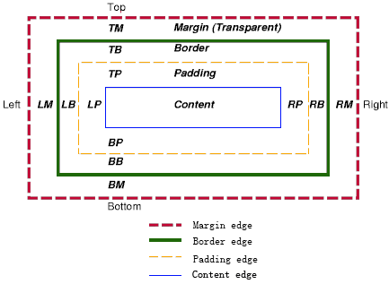

关于css盒子模型，以前总是不太清楚，尤其对于margin和padding老是混淆。其实主要是没有系统的学习一下，没有理解其内在实现和布局结构。我们只要掌握了盒子模型中的几个属性，就会自然而然地学会了css盒子模型，再练习一下demo，就可以完全掌握其实现原理。首先通过一张flash来看一下盒子模型中margin、background-color、background-image、border和padding，以及他们之间的关系。

从上面的flash可以清楚的看到盒子模型各属性的内部结构。CSS 规范中描述的盒子模型被称为“框模型”（box model），包括 content box、padding box、border box 和 margin box，它们是不可分割的，并可能会重合。 下面再给出一张示意图
注：padding、border 和 margin 区域都包括 top、right、bottom、left 四部分。如图所示（"LM" 代表 left margin，"RP" 代表 right padding，"TB" 代表 top border……）。
上面的大框，代表一个元素生成的矩形区域( box )，每一个 box 都包括一个 content 区域（元素的内容，如文本，图形等）以及环绕其四周的 padding (元素的内边距，填充部分)、border (元素的边框) 和 margin (元素的外边距) 区域。
下面给出一例子
关于盒子模型需要注意的几个地方
margin应用范围
margin 可以应用在非 table 类型的元素上，以及 table 类型中 table-caption, table 和 inline-table 这3类元素上。其他的不起作用， 比如 td tr th 等，margin 是不适用的。 并且，对于行内非替换元素（例如 SPAN），垂直方向的 margin 不起作用。
外边距折叠( Collapsing margins )
Collapsing margins，即外边距折叠，指的是毗邻的两个或多个外边距 (margin) 会合并成一个外边距。
其中所说的 margin 毗邻，可以归结为以下两点：
- 这两个或多个外边距没有被非空内容、padding、border 或 clear 分隔开。
- 这些 margin 都处于普通流中2。